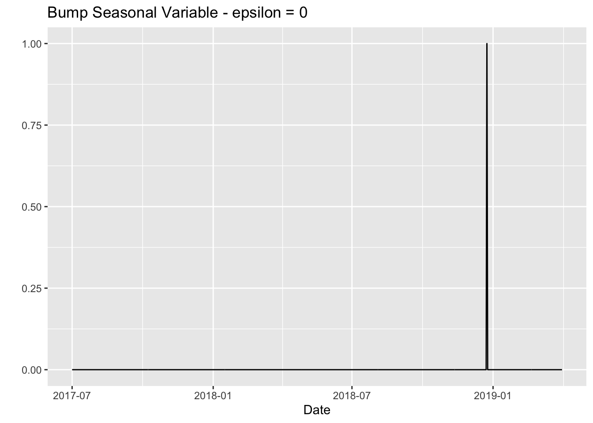
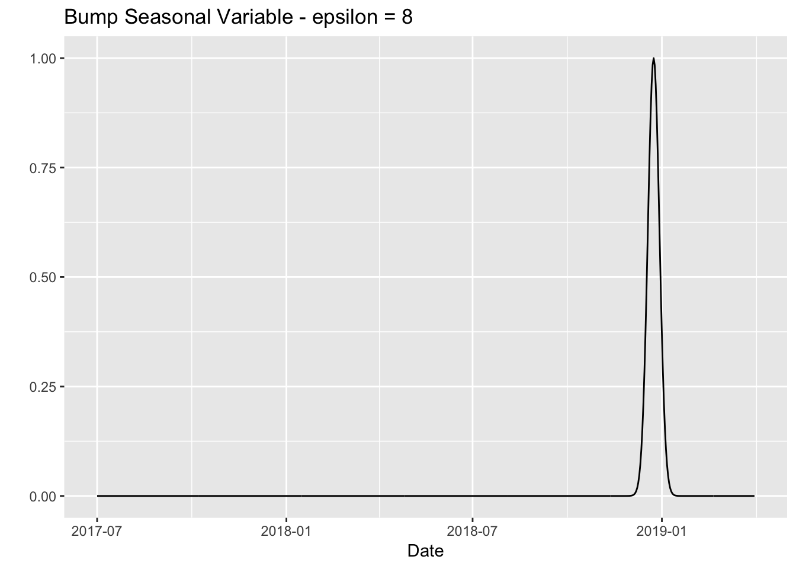
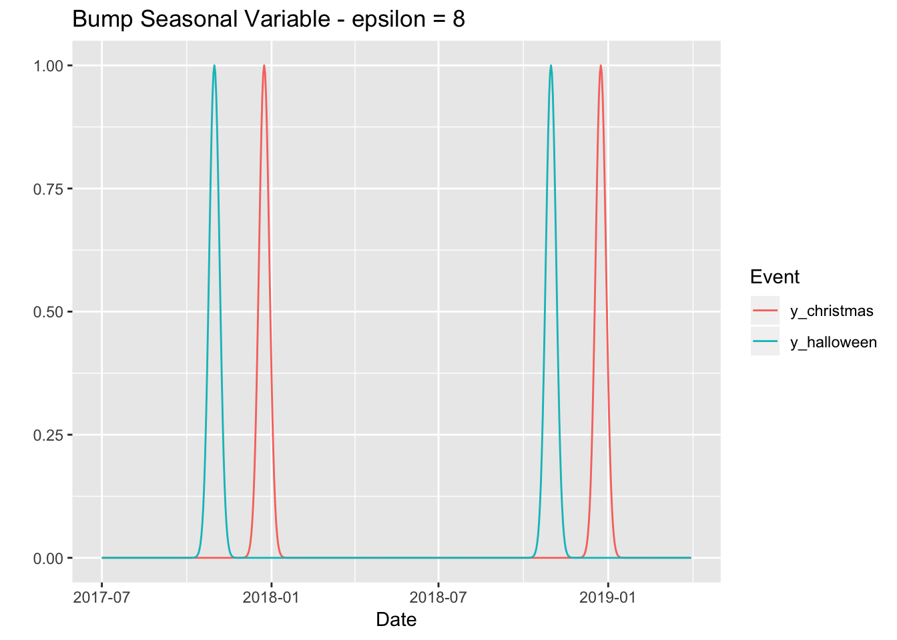
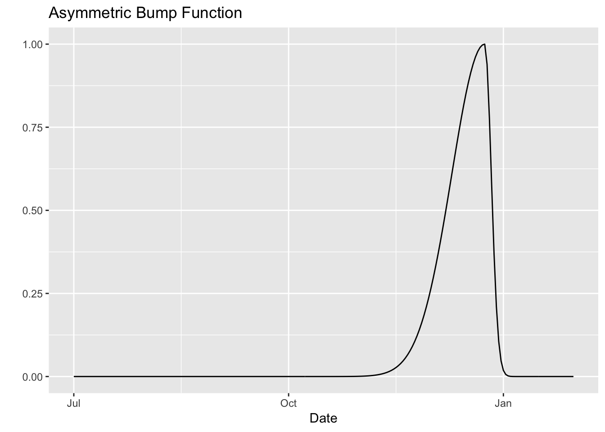

Motivated by the nice talk on Winning with Simple, even Linear, Models by Vincent D. Warmerdam, I briefly describe how to construct certain class of bump functions to encode seasonal variables in R.
Prepare Notebook
library(glue)
library(lubridate)
library(magrittr)
library(tidyverse)Generate Data
Let us generate a time sequence variable stored in a tibble.
# Define time sequence.
t <- seq.Date(from = as.Date("2017-07-01"), to = as.Date("2019-04-01"), by = "day")
# Store it in a tibble.
df <- tibble(t = t)Symmetric Bump Function
We want to generate a gaussian-like curve around a specific date. The width of the bump function is parametrized by a non-negative number \(\varepsilon \geq 0\). For \(\varepsilon = 0\) we generate a dummy variable. Namely, for \(\varepsilon \neq 0\),
\[ f_{x_0, \varepsilon}(x) = \exp\left(- \left(\frac{x - x_0}{\varepsilon}\right)^2 \right) \]
In R,
bump_func <- function(x, x_0 = 0, epsilon = 1) {
# If `epsilon` = 0, we encode it as a dummy variable.
if (epsilon == 0) {
as.numeric(x == x_0)
} else {
delta <- as.numeric(x - x_0)
exp(- (delta / epsilon)^2)
}
}Examples
Let us asumme we want to model the effect of Christmas 2018-12-24.
- \(\varepsilon = 0\) will generate a dummy variable.
epsilon <- 0
df %>%
mutate(y = bump_func(x = t,
x_0 = as.Date("2018-12-24"),
epsilon = epsilon)) %>%
ggplot() +
geom_line(mapping = aes(x = t, y = y)) +
xlab("Date") +
ylab("") +
ggtitle(label = glue("Bump Seasonal Variable - epsilon = {epsilon}"))
- \(\varepsilon = 8\) will generate a bump function around
2018-12-24.
epsilon <- 8
df %>%
mutate(y = bump_func(x = t,
x_0 = as.Date("2018-12-24"),
epsilon = 8)) %>%
ggplot() +
geom_line(mapping = aes(x = t, y = y)) +
xlab("Date") +
ylab("") +
ggtitle(label = glue("Bump Seasonal Variable - epsilon = {epsilon}"))
Let us see how to do it for repeated dates and events:
epsilon <- 8
christmas_dates <- c(as.Date("2017-12-24"), as.Date("2018-12-24"))
halloween_dates <- c(as.Date("2017-10-31"), as.Date("2018-10-31"))
df %>%
mutate(
y_christmas = map(
.x = christmas_dates,
.f = ~ bump_func(x = t, x_0 = .x, epsilon = epsilon)) %>%
reduce(.f = ~ .x + .y),
y_halloween = map(
.x = halloween_dates,
.f = ~ bump_func(x = t, x_0 = .x, epsilon = epsilon)) %>%
reduce(.f = ~ .x + .y)) %>%
gather(key = Event, value = value, ... = y_christmas, y_halloween) %>%
# Plot variables.
ggplot() +
geom_line(mapping = aes(x = t, y = value, color = Event)) +
xlab("Date") +
ylab("") +
ggtitle(label = glue("Bump Seasonal Variable - epsilon = {epsilon}"))
Asymmetric Bump Function
Sometimes the effect before and after the seasonal variable is note the same. To model this we can tweak the bump function defined above so that:
- It is not symmetric.
- It can have a drop after the seasonal variable (an potentially have different effect sizes).
A natural candidate to fulfill these requirements is
\[ a_{-} f_{x_0, \varepsilon_{-}}(x)I_{\{x \leq x_0\}} \pm a_{+} f_{x_0, \varepsilon_{+}}(x) I_{\{x > x_0\}} \] where:
\(I_{\{x \leq x_0\}}\) and \(I_{\{x > x_0\}}\) denote the corresponing indicator functions.
\(f_{x_0, \varepsilon_{\pm}}\) denotes the bump function defined above.
\(\varepsilon_{-}, \varepsilon_{+} >0\) denote the width (variance) before and after \(x_0\) respectively.
\(a_{-}, a_{+} >0\) denote the amplitudes before and after \(x_0\) respectively.
We now write this function in R.
asymmestric_bump_func <- function(
# Input vector.
x,
# Maximum of bump function.
x_0,
# Width of bump function before `x_0`.
epsilon_minus = 1,
# Width of bump function after `x_0`.
epsilon_plus = 1,
# Amplitude of bump function before `x_0`.
a_minus = 1,
# Amplitude of bump function after `x_0`.
a_plus = 1,
# Wether to have a drom after `x_0`.
drop = FALSE
) {
delta <- as.numeric(x - x_0)
# Define indicator functions.
indicator_minus <- as.numeric(delta < 0)
indicator_plus <- as.numeric(delta >= 0)
# Calculate bump function components.
y_minus <- a_minus * indicator_minus * bump_func(x = x, x_0 = x_0, epsilon = epsilon_minus)
y_plus <- a_plus*indicator_plus * bump_func(x = x, x_0 = x_0, epsilon = epsilon_plus)
# Calculate sign depending on the drop choice.
drop_sign <- 2*as.numeric(drop) - 1
y <- y_minus - drop_sign*y_plus
return(y)
}Examples
Let us ilustrate the results for Christmas 2017-12-24.
Without Drop
df %>%
mutate(y = asymmestric_bump_func(x = t,
x_0 = as.Date("2017-12-24"),
epsilon_minus = 20,
epsilon_plus = 4,
drop = FALSE)) %>%
# Filter for visualization (zoom in).
filter(t < "2018-02-01") %>%
ggplot() +
geom_line(mapping = aes(x = t, y = y)) +
xlab("Date") +
ylab("") +
ggtitle(label = glue("Asymmetric Bump Function"))
With Drop
df %>%
mutate(y = asymmestric_bump_func(x = t,
x_0 = as.Date("2017-12-24"),
epsilon_minus = 15,
epsilon_plus = 4,
a_minus = 1,
a_plus = 0.3,
drop = TRUE)) %>%
# Filter for visualization (zoom in).
filter(t < "2018-02-01") %>%
ggplot() +
geom_line(mapping = aes(x = t, y = y)) +
xlab("Date") +
ylab("") +
ggtitle(label = glue("Asymmetric Bumb Function with Drop"))